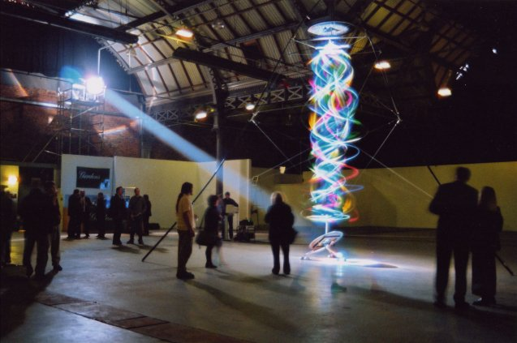
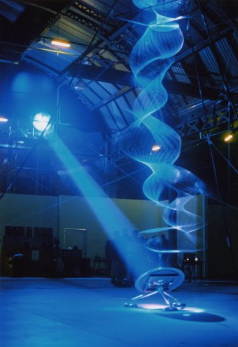
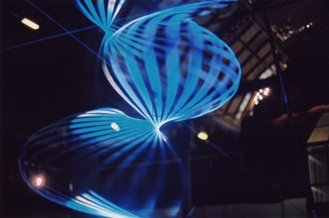

The Wave Factory ·
at inter:face The showcase for digital art in Manchester.
|
The Wave Factory is the next stage in the development of an idea which has been central to my work for more than ten years. The inspiration for this work goes back to a time around 15 years ago when I was first thinking about how to create 3D light projections. To this day a full solution to this problem has never been found - holograms, stereo projections - all of these techniques give an impression of 3d but never in the space that we live in. I wanted to create real light sculpture which occupied that space.
|
|
After experimenting with systems for projecting special light on various spinning objects to create light sculptures, I found the perfect combination of phenomena - I was experimenting with a series of very small pieces when it crossed my mind that a skipping rope forms a transparent bubble around the skipper. I thought I would try and make a small skipping rope driven by electricity - my first experiment was just a length of string, barely a foot long, and two model motors. To my amazement, the very first moment I switched this device on I saw an extraordinary range of wave patterns far more intriguing than just the simple skipping shape I was expecting. Depending on the speed and the amount of slack in the rope the patterns vary from harmonic, reminiscent of the oscillating strings of musical instruments, through to changing and chaotic patterns. Between these extremes patterns emerge with strangely almost humanoid form, suggesting the shape and movements of a dancer. I have lit these kinetic forms with a variety of high intensity light sources. Most notably I have used chromastrobic light - light which changes colour faster than the human eye can see. This appears white, but contains a mixture of colours, generally created by spinning a colour wheel at high speed in front of the light source. A static object looks unchanged by the light, but an object moving at high speed leaves multi coloured trails of light floating in the air behind it. Thanks to the persistence of vision, the chromastrobic light shows its colours when shining on these moving objects. When the objects is a string or rope, the resulting forms then become magically transformed turning this simple element into a multi coloured light sculpture. |
|
The Wave Factory is the largest piece I have exhibited in Britain. It is a free standing ultra light weight structure, made from high modulus carbon fibre fibre composite. It is approximately eight metres tall. The light illuminating the sculpture is a custom designed searchlight using a 2.5 kw HMI lamp, a 35" diameter fresnel lens and a computer controlled light modulator. I developed the software using the programming language Delphi. The program, as well as providing interactivity, will automatically change the light sculpture when its senses nobody is trying to interact with it. I have adapted the principles of generative music to create a sequence of changes which is not random but never completely predictable. The movement is created by spinning the nylon rope with a servo motor mounted in the top of the framework. The speed is controlled by the computer. organised by digitalsummer www.digitalsummer.org/interface Home Page | New Art Gallery | New York | London | Barcelona
|